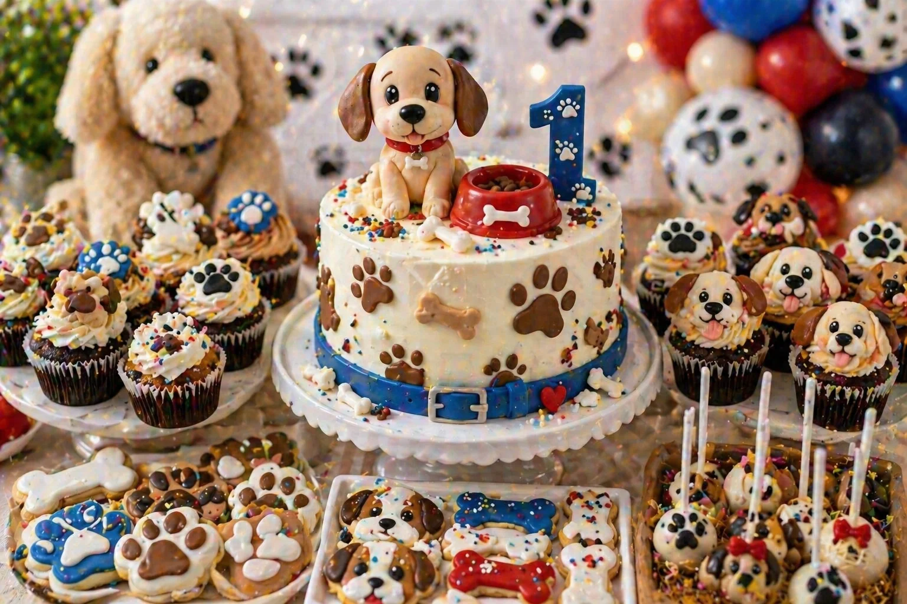
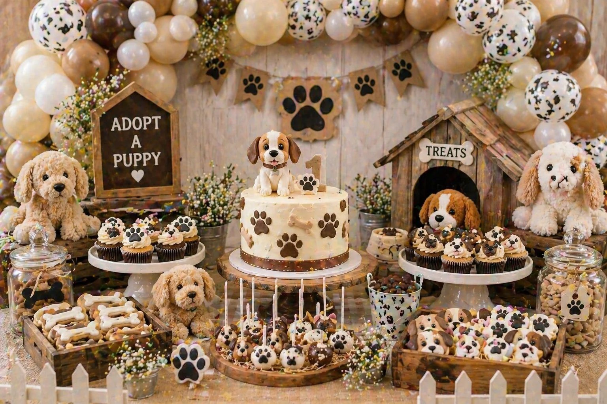

A puppy party is a playful, sweet and family-friendly theme for a children's birthday celebration. With paw-print balloon garlands, a puppy birthday cake, dog bone cookies, puppy face cupcakes and plush puppy props, the dessert table can become the centrepiece of the whole party.
At Little Moment Studio, our focus is balloon styling and celebration setups. We do not make cakes or cupcakes ourselves, but we know how important the dessert table is to the overall party look. This guide covers puppy party inspiration — colour palettes, balloon ideas, three styling approaches and sweet treat ideas that work beautifully together.
If you would like cupcakes or a cake to complement your balloon display, we are happy to recommend a trusted local cake maker.
Puppy Party Colour Palettes
Start with the colour palette before choosing balloons, cake or sweet treats. Pick three to five colours and repeat them across every element on the table.
Classic Puppy
Red, blue, white and black. Bright, cheerful and instantly recognisable.
Soft Neutral
Cream, beige, mocha and soft brown. Warm, gentle and photo-friendly.
Pink Puppy
Blush, ivory, mocha and soft gold. Sweet and feminine styling.
Dalmatian
White, black, red and silver. Bold, graphic and very easy to style.
Idea 1: Classic Puppy Dessert Table
A classic puppy dessert table uses bright, cheerful colours with paw prints, dog bones and puppy face details. Red, blue and white create an energetic, friendly feel that works well for all ages and is immediately understood by young children. Paw-print balloons used as accents in the garland tie the whole theme together without the need for an elaborate backdrop.
| Element | Classic Puppy Idea |
|---|---|
| Balloon garland | Red, blue and white with paw-print balloon accents |
| Backdrop | Paw-print backdrop, doghouse scene or simple coloured panel |
| Cake | Puppy birthday cake with paw-print and bone decorations |
| Cupcakes | Puppy face cupcakes and paw-print cupcakes in party colours |
| Cookies | Dog bones, paw prints and puppy face cookies |
| Cake pops | Puppy face pops or paw-print pops in red, blue and white |
| Sweet jars | Red and white sweets, bone-shaped sweets and colour-matched treats |
| Props | Plush puppies, treat jars, dog bowls and wooden crates |
This is the clearest all-round puppy party look because the palette is immediately recognisable and the paw-print details leave no doubt about the theme. The key is using paw-print balloons as accents rather than the main balloon — two or three in a garland of solid red, blue and white gives the display character without becoming too busy.
Balloon tip
For a classic puppy garland, use red, blue and white latex balloons as the base with paw-print balloons added as occasional accents. Keep the paw-print balloons spaced out — one every six to eight balloons is enough for the pattern to read clearly. Too many patterned balloons make the garland feel visually cluttered.
Idea 2: Puppy Cake & Cupcake Display

Puppy cake and cupcake display styled by Little Moment Studio, Sittingbourne — puppy topper, paw-print cupcakes and dog bone cookies
A puppy cake and cupcake display makes the birthday cake the unmistakable centrepiece of the table. Puppy face cupcakes and paw-print cupcakes grouped around the cake stand create a cohesive themed display — the mix of different cupcake styles adds visual interest while all staying clearly within the same puppy theme.
| Element | Puppy Cake Display Idea |
|---|---|
| Cake | Puppy topper cake with paw-print and dog bone decorations |
| Cupcakes | Mix of puppy face cupcakes and paw-print cupcakes on a tiered stand |
| Cookies | Dog bone and paw-print cookies to frame the base of the stand |
| Cake pops | Puppy face pops or bone-shaped pops on a small stand |
| Cake stand | White or cream tiered stand with paw-print detail |
| Balloon garland | Red, blue and white garland with paw-print accents above the table |
| Props | Plush puppies and treat jars on either side of the cake stand |
Puppy face cupcakes are especially useful because they make the theme unmistakably clear even before guests reach the table. A simple fondant ear and nose finish on a smooth buttercream base is enough — they do not need to be elaborate to be effective.
For more birthday cupcake ideas, see our birthday cupcake ideas guide.
Idea 3: Soft Neutral & Adopt-a-Puppy Table

Soft neutral adopt-a-puppy party table — cream, beige and mocha with plush puppies, wooden crates and rustic treat jars
A soft neutral puppy table is a calmer, more premium version of the theme. By using cream, beige, mocha and soft brown instead of bold primary colours, the table feels warm and rustic rather than bright and graphic. This style works especially well for first birthdays, smaller celebrations and styled home parties where the photography is important.
The adopt-a-puppy format — where plush puppies are displayed alongside the cake and each child takes one home as a favour — adds an interactive element that young children love and parents remember.
| Element | Soft Neutral & Adopt-a-Puppy Idea |
|---|---|
| Balloon garland | Cream, beige and mocha with ivory filler and paw-print accents |
| Backdrop | Natural wood or soft linen backdrop |
| Cake | Neutral puppy cake with number one topper for first birthdays |
| Cupcakes | Brown and cream puppy face cupcakes and paw-print cupcakes |
| Cookies | Dog bone and paw-print cookies in beige and brown icing |
| Props | Plush puppies displayed in wooden crates for guests to take home |
| Treat jars | Cream and brown sweets in rustic jars alongside the cake stand |
| Stands | Light wood or cream cake stands with natural linen runner |
Styling tip
For an adopt-a-puppy table, display the plush puppies at slightly different heights using a mix of crates and stands. A small handwritten tag on each puppy — with a name or paw-print sticker — adds a personalised detail that makes the favour feel special rather than an afterthought.
What to Include on a Puppy Dessert Table
A puppy dessert table can be simple or full depending on the size of the party. Start with the cake and cupcakes, then add cookies, cake pops and sweet jars to fill the space. Plush puppies, treat jars and dog bowls fill the remaining visual space without adding more food than guests can eat.
| Treat | Puppy Party Idea |
|---|---|
| Birthday cake | Puppy topper cake, paw-print cake, doghouse cake or dog bowl cake |
| Cupcakes | Puppy faces, paw prints, dog bones or collar detail cupcakes |
| Cookies | Dog bones, paw prints, puppy faces, doghouses and collars |
| Cake pops | Puppy face pops, paw-print pops or treat-style pops |
| Macarons | Cream, brown, red, blue or blush pink tones |
| Sweet jars | Bone-shaped sweets, chocolate treats or colour-matched confections |
| Brownies | Chocolate "puppy treat" style pieces |
| Mini desserts | Small pots with paw-print toppers |
For practical advice on arranging the table layout, see our guide to how to style a dessert table for a children's party.
Puppy Party Balloon Ideas
The balloon display creates most of the visual impact around the dessert table. A garland that frames the backdrop and table is the most effective approach — and for a puppy party, the balloon palette sets the tone for whether the table feels bright and bold or soft and neutral.
| Theme | Balloon Colours |
|---|---|
| Classic puppy | Red, blue and white with paw-print balloon accents |
| Soft neutral | Cream, beige and mocha with ivory filler |
| Pink puppy | Blush, ivory and soft gold with paw-print accents |
| Dalmatian | White, black and red with spotted balloon accents |
| First birthday puppy | Cream, beige and mocha with number balloon accent |
For a premium result, use paw-print balloons sparingly — they are most effective as accents within a solid-colour garland rather than as the dominant balloon. See our balloon garlands in Kent page and birthday balloon styling page for packages and availability.
Matching Balloons, Cake & Cupcakes
To make the table feel coordinated, repeat the same colours across the balloons, cake and sweet treats. They do not need to match exactly — they just need to feel like part of the same colour story.
| Balloon Palette | Cake & Cupcake Idea |
|---|---|
| Red, blue, white | Classic puppy cake, paw-print cupcakes, bone cookies |
| Cream, beige, mocha | Neutral puppy cake, brown and cream cupcakes, paw cookies |
| Blush, ivory, gold | Pink puppy cake, bow-detail cupcakes, heart cookies |
| White, black, red | Spotted puppy cake, Dalmatian-style cupcakes, paw cookies |
| Cream, beige, ivory | First birthday puppy cake with number one topper, paw cupcakes |
Your Questions Answered
What colours work best for a puppy party?
Red, blue, white and black are the classic bright puppy party palette and work well for most ages. For a softer, more neutral look, cream, beige, mocha and soft brown feel warm and friendly without being too bold. Blush pink, ivory, mocha and soft gold work beautifully for a pink puppy theme. For a Dalmatian-inspired table, white, black and red with spotted details create a bold, graphic look. Pick three to five colours and repeat them across every element.
What balloons should I use for a puppy party?
A red, blue and white garland is the most recognisable classic puppy balloon choice. Paw-print balloons added as accents — two or three in a full garland — give the display a clear puppy identity without overpowering the solid colours. For a soft neutral or adopt-a-puppy theme, cream, beige and mocha balloons with ivory filler feel warm and beautifully styled. For a pink puppy party, blush, ivory and soft gold balloons work well alongside plush puppy props.
What cupcakes work well for a puppy party?
Puppy face cupcakes and paw-print cupcakes are the most popular options and make the theme immediately clear to young children. Puppy face cupcakes can be finished with simple fondant ears and a nose on a smooth buttercream base. Paw-print cupcakes are easy to achieve using a small round piping tip. Dog bone topper cupcakes are a simple alternative that require less piping skill. See our birthday cupcake ideas guide for more inspiration.
What should I include on a puppy party dessert table?
A strong puppy party dessert table includes a puppy birthday cake as the centrepiece, twelve to twenty-four puppy face or paw-print cupcakes, dog bone and paw-print cookies, puppy cake pops, treat jars and plush puppy props. A paw-print balloon garland framing the backdrop creates most of the visual impact. Wooden crates, dog bowls and rustic treat jars reinforce the puppy theme without cluttering the display.
Can a puppy party work for a first birthday?
Yes — a puppy theme is a popular choice for first birthdays because the friendly animal characters engage very young children. For a first birthday puppy table, use a softer palette: cream, beige, mocha and ivory instead of bright red and blue. A puppy cake with a number one topper, paw-print cupcakes and dog bone cookies keep the table charming without being overwhelming. See our first birthday balloon ideas guide for more.
Whether you choose the classic red, blue and white approach, a coordinated puppy cake and cupcake centrepiece, or the softer neutral adopt-a-puppy style, the key to a great puppy party table is consistency. When the balloons, cake, cupcakes, cookies and props all share the same colour language, the whole setup feels designed rather than assembled.
For more children's birthday party inspiration, see our guides to farm party balloon and dessert table ideas, unicorn party balloon and dessert table ideas and space party balloon and dessert table ideas.
Planning a Puppy Party in Sittingbourne or Kent?
Little Moment Studio creates beautiful balloon displays and celebration setups for children's birthdays across Sittingbourne and Kent. We can also recommend a trusted local cake maker to complete your puppy party dessert table.